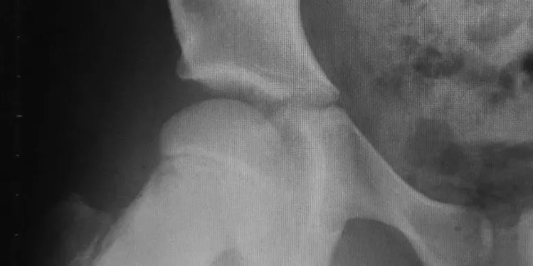
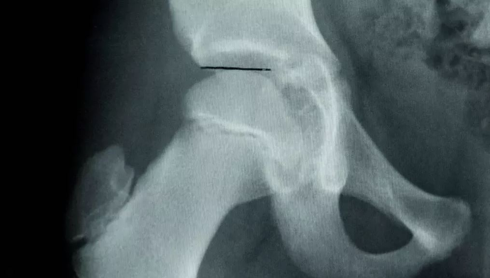

Training for Hip Extensions
Many dance aesthetics require high extensions, and dancers on Instagram are . . . enthusiastic about pursuing them and posting the results. Posts of extreme extensions, sometimes performed without much consideration for proper technique, are common.
Femoroacetabular Impingement (FAI), also commonly called hip impingement, is a condition the causes pain in the hip due to repetitive contact between the femur and the pelvis at the acetabulum during end-range motion. Because dancers tend to have a large range of motion in this joint, often coupled with instability due to extreme stretching, hip impingement is a relatively common condition in dancers.
Unfortunately, some common stretching and strengthening practice in dance training can increase the risk of hip impingement. One of these is the use of extreme force when stretching the hips &emdash; such as using weights to pull legs downwards in middle splits.
When the hip joint is forcibly pushed into these extreme positions, contact is sometimes made between the head of the femur and the acetabulum and damage to soft tissue is also possible. Another training technique commonly portrayed on Instagram is the use of ankle weights to improve leg strength for higher grand battements / high kicks.
When doing a grand battement, a dancer with an extreme range of motion is already at risk for causing bony contact or damaging soft tissue. The addition of the weights on the ankles worsens this problem. When the femoral head makes contact with the acetabulum (either anterior or posterior to the center), the point of contact can act as a fulcrum for the femoral head to begin to slide out of the acetabulum in the direction opposite of the contact. For instance, a dancer doing a grand battement to the front could have contact between the anterior surface of the femoral head and the acetabulum, causing the femoral head to slide slightly backwards.
When a dancer has an ankle weight on their ankle and does a high kick, the leg essentially becomes a weighted lever arm, which increases the force acting at the fulcrum of bony contact in the hip.
The use of these training techniques over time can have a negative effect on a dancer's long-term hip joint health. While some bony remodelling of the hip may be desirable in dancers aiming for professional careers, permanent damage can also be caused.
The x-ray below shows a relatively normal femoroacetabular joint, with a smoothly rounded femoral head.

In contrast, this x-ray shows a shallower hip socket and a more flattened femoral head.

These x-rays are of a single young dancer, taken three years apart.